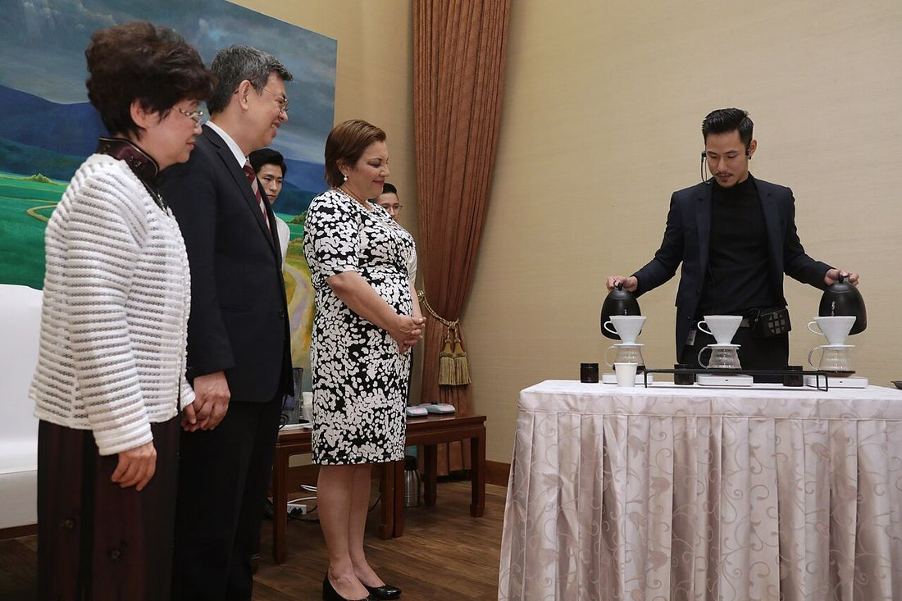
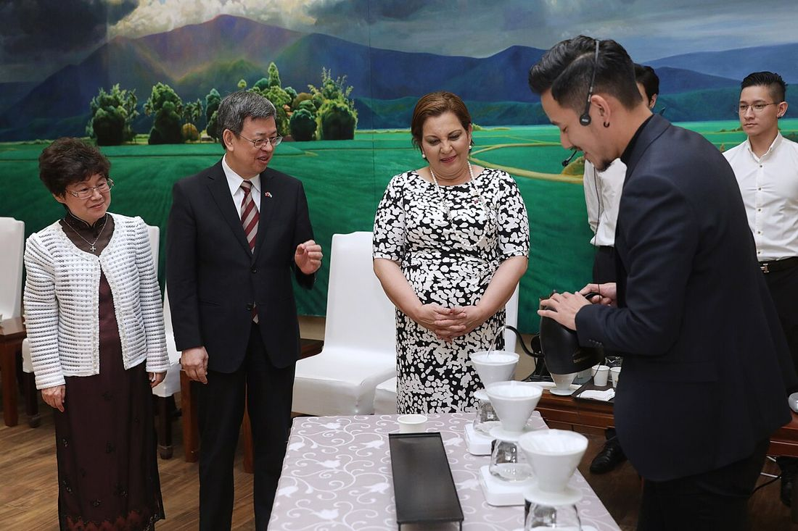
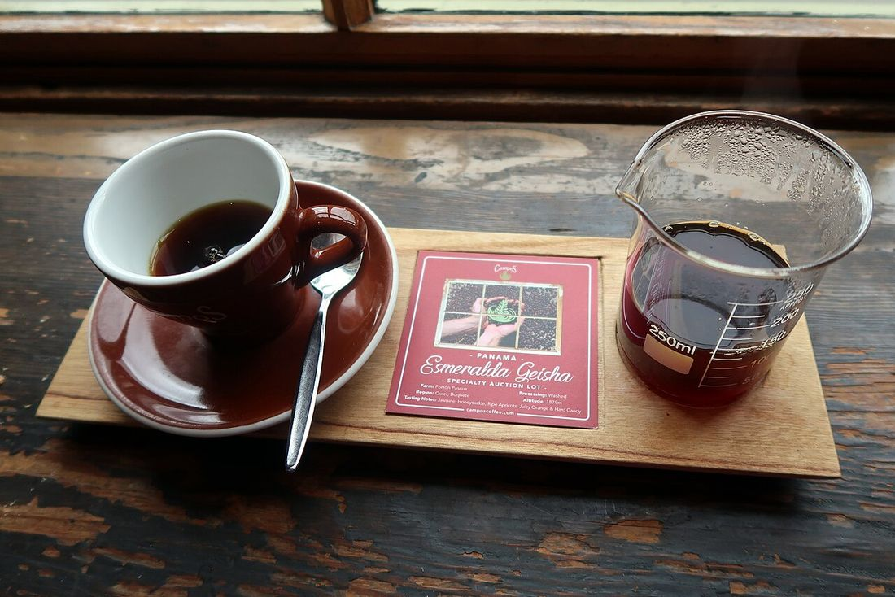
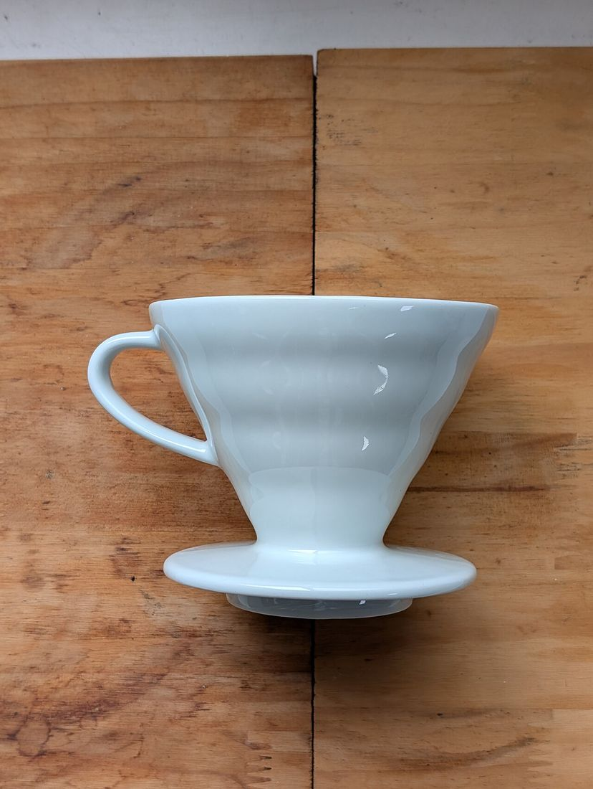
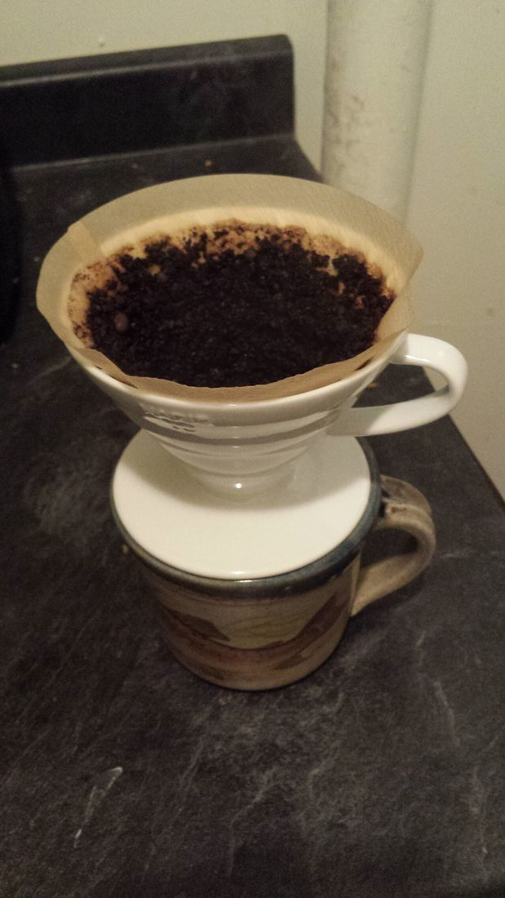

台北老店．中山與東區
王策：台灣的世界手沖冠軍
十五克粉、兩百五十毫升水、兩分鐘。這是一杯世界冠軍手沖。

二〇一七年六月，布達佩斯世界盃沖煮大賽，冠軍是台灣的王策。報導說，他是第一位拿下這項冠軍的華人。
兩年就站上世界頂端
他十二歲到英國念書，讀過食品管理碩士，二〇一五年才開始專攻咖啡。
二〇一六年第一次代表台灣站上世界賽，拿第三；隔年往前兩名，直接奪冠。
冠軍的那一杯
決賽用巴拿馬日曬藝伎，他在產地試喝了三百支豆子才選中。
他刻意用沒有預熱的厚陶瓷濾杯，說溫度更穩、風味更集中。
得獎後，他婉拒代言和顧問邀約，隔年在台北開了自己的咖啡店。
專業點：冠軍配方抄起來
・15 克粉，250 克水，約 1：16.7
・先繞圈注 30 克水，悶蒸 30 秒
・再從中心把水注完，約 2 分鐘滴完
・水溫約 92–93 度，粉磨得很細
老照片與街景




店家資訊
- 店家
- VWI by CHADWANG
- 地點
- 台北市大安區忠孝東路三段251巷4弄16號
- 現況
- 出發前先確認
- 營業時間
- 常有變動，出發前請再確認
- IG 影片
- 1/26 上片
你在家手沖都用什麼比例？留言比比看。
到 IG 留言告訴我們
到 IG 留言告訴我們